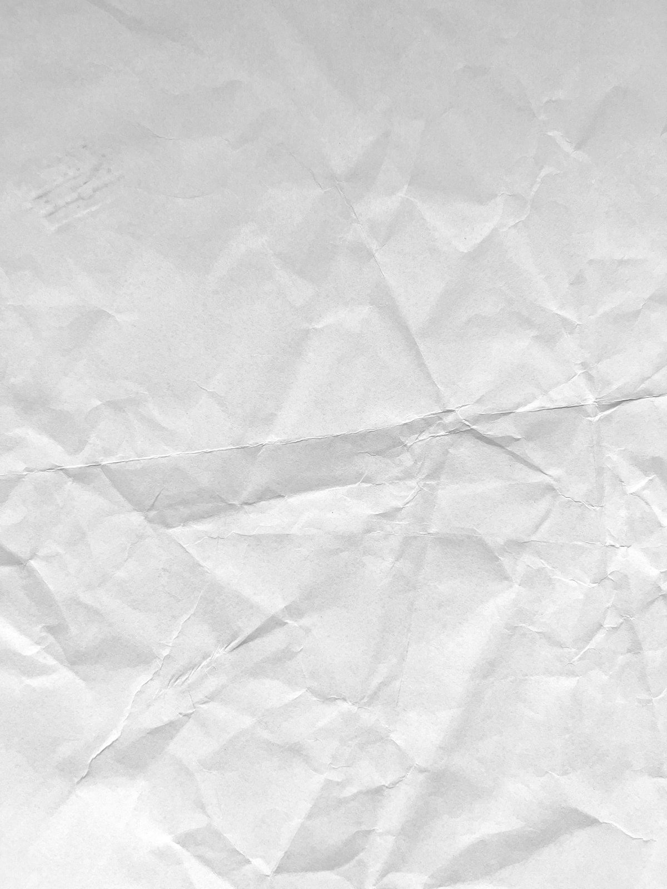
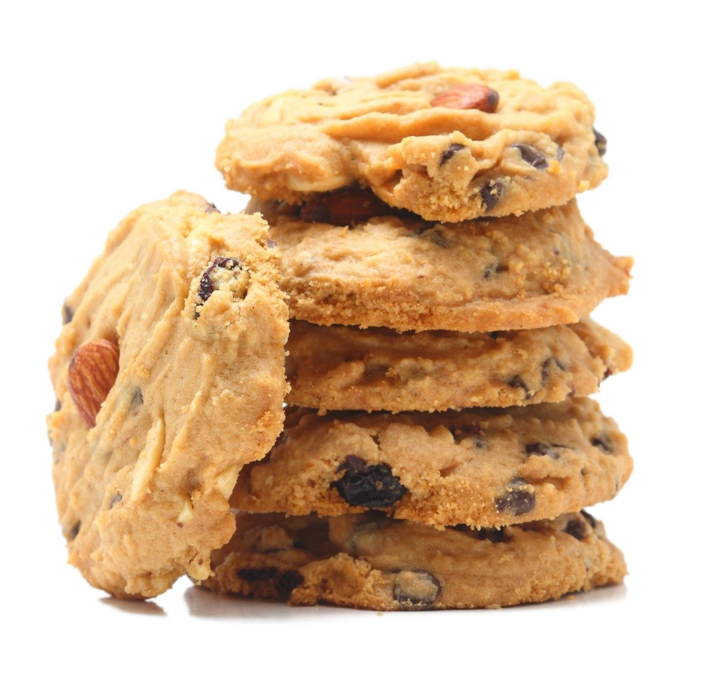
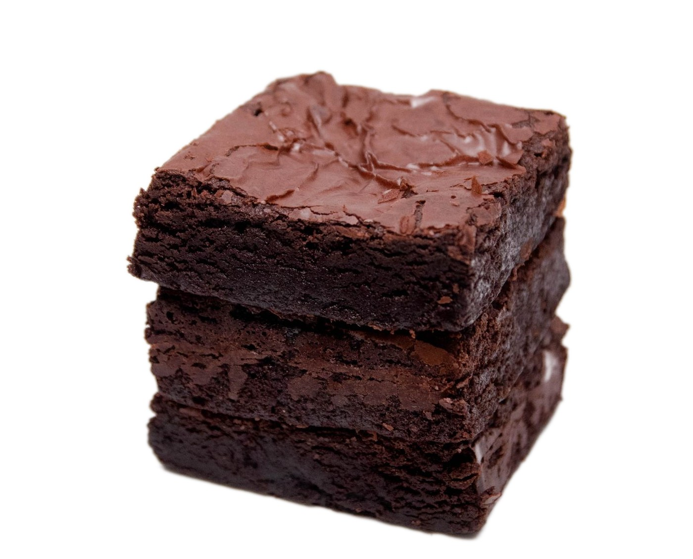
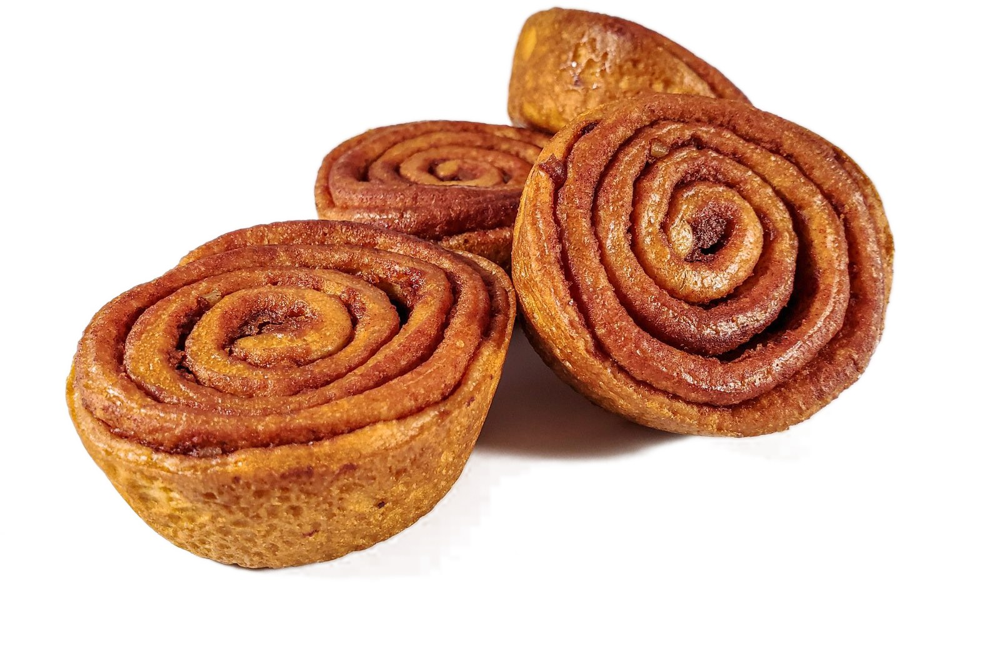

2,50 €
Burro, nocciole e gocce di cioccolato fondente, cotti ogni mattina.
3,00 €
Cioccolato al 70% e cuore morbido, da mangiare ancora tiepido.


2,80 €
Pasta lievitata, cannella e zucchero di canna, glassate a mano.